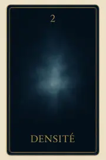
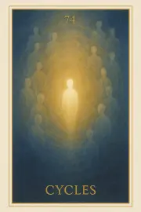

Famille 2 – Geb (Terre)
Cette deuxième famille de l’Oracle Sia est liée à la Terre et à Geb. Elle explore la mémoire corporelle, les traces laissées dans la matière et les liens profonds entre incarnation et conscience. Chaque carte invite à écouter le corps subtil, à reconnaître ce qui vibre encore, et à honorer la sagesse enfouie dans les gestes anciens.
Carte 2 – Densité
Mots-clés : Mémoire de la matière, Présence vibratoire, Poids subtil, Attache flottante, Risque d’alourdissement
Chiffre caché : 92
Lecture inversée : 2 → 9
Divinité principale : Geb
Planète secondaire : Soleil
Divinité secondaire : Râ
Interprétation de la carte 2 : Densité (droite)
Lecture intuitive rapide
Après l’éveil silencieux de Lat, l’âme perçoit l’écho de la matière. Non pas comme une mémoire ou une nostalgie : simplement comme une texture flottante, une densité subtile autour d’elle. Le lien avec la Terre n'est pas encore tranché. L’âme ressent le poids léger de son ancienne incarnation, sans encore y réagir.
1. Caractère de la personne
L’âme ressent l'empreinte vibratoire de son passage terrestre. Elle n'est ni retenue ni attachée : elle flotte au bord de ce qu’elle fut, consciente de la lourdeur douce qui l’entoure.
2. Plan affectif
Les attaches terrestres ne sont pas encore revenues comme souvenirs émotionnels. Il ne s'agit que d’une impression diffuse, comme un parfum ténu du monde ancien.
5. Plan spirituel
Spirituellement, Densité est la prise de conscience que la matière existe encore autour d’elle, sans pour autant l’enchaîner. Geb éveille cette mémoire physique, Râ éclaire en douceur sans hâter l’âme.
Carte 2 : Densité (inversée)
1. Caractère de la personne
L’âme s’alourdit inutilement. Elle risque de confondre la sensation de densité avec un appel vers la matière, et de rester collée à ses anciens repères.
2. Plan affectif
Un poids émotionnel émerge prématurément : l’âme croit devoir retenir les attachements, au lieu de les laisser se dissoudre naturellement.
5. Plan spirituel
Spirituellement, Densité inversée montre la confusion entre la mémoire physique et la lumière intérieure. L'âme se laisse ralentir par la texture du monde terrestre, au lieu de reconnaître sa liberté naissante.
Résumé de la carte 2 : Densité
Densité est la première sensation subtile que perçoit l'âme après sa sortie du corps. Elle sent la matière encore vibrer autour d’elle, sans y être liée émotionnellement. À l’endroit, Densité est une simple prise de conscience. À l’envers, elle devient un risque d’alourdissement prématuré.
Carte 11 – Regard
Mots-clés : : Vision extérieure du corps, Séparation incarnée, Lucidité silencieuse, Détachement sacré, Choc de reconnaissance
Chiffre caché : 83
Lecture inversée : 3 → 8
Divinité principale : Geb
Planète secondaire : Terre
Divinité secondaire : Geb
Interprétation de la carte 11 : Regard (droite)
Lecture intuitive rapide
L’âme pose pour la première fois le regard sur son propre corps étendu. Elle ne le ressent plus de l’intérieur, mais elle le voit depuis l’extérieur — et le choc est silencieux, absolu, sans retour. Le corps est là, mais vide. L’âme reconnaît la forme, mais ne s’y identifie plus. Le REGARD est intense, non parce qu’il juge, mais parce qu’il voit sans barrière.
1. Caractère de la personne
L’âme regarde le corps qu’elle vient de quitter. Elle ressent l’étrangeté familière de cette forme vide. C’est un moment de lucidité nue, sans émotion, mais chargé de vérité.
2. Plan affectif
Il peut y avoir une douleur muette, un attachement non verbal, mais aussi un détachement grandissant, comme si le lien se défaisait sous le regard même.
5. Plan spirituel
Spirituellement, REGARD est le moment sacré de séparation visible. L’âme reconnaît ce qu’elle n’est plus, mais doit encore apprendre à ne pas y retourner.
Carte 11 : Regard (inversée)
1. Caractère de la personne
L’âme rejette la vision du corps, ou refuse d’accepter qu’elle ne l’habite plus. Elle cherche à s’y raccrocher, confuse.
2. Plan affectif
Des attachements profonds émergent brutalement. L’âme peut refuser le détachement, ou se sentir trahie par sa propre disparition.
5. Plan spirituel
L’âme ne reconnaît pas la rupture. Elle confond encore l’Être et la Forme. La séparation est bloquée.
Résumé de la carte 11 : Regard
REGARD est le premier contact visuel de l’âme avec son ancien corps. C’est un moment sacré, bouleversant, mais aussi libérateur. Elle voit sans pouvoir retrouver.
À l’endroit, elle accepte ce qu’elle voit.>
À l’envers, elle rejette ou nie la vérité du corps déserté.Carte 20 – Souvenir
Mots-clés : : Mémoire incarnée, Nostalgie terrestre, Attachement au passé, Perception émotionnelle, Ouverture à la lumière
Chiffre caché : 101
Lecture inversée : 1 → 0 → 1
Divinité principale : Geb
Planète secondaire : Jupiter
Divinité secondaire : Amon-Rê
Interprétation de la carte 20 : Souvenir (droite)
Lecture intuitive rapide
L’âme regarde en arrière. Mais ce n’est pas encore un regard sur elle-même. Elle revoit les lieux, les gestes, les visages, les choses qui ont marqué sa mémoire terrestre. Elle ne juge pas. Elle revit. Elle essaie de comprendre à travers ce qu’elle a perdu. Mais son regard reste attaché à la forme, à ce qui était tangible. Elle interroge la matière, alors que la lumière d’Amon-Rê commence déjà à l’appeler.
1. Caractère de la personne
L’âme s’attache à ses souvenirs. Elle essaie de comprendre ce qu’elle a vécu, mais reste bloquée dans la forme.
2. Plan affectif
L’âme ressent une nostalgie douce ou douloureuse. Les émotions vécues prennent plus de place que la vérité spirituelle.
5. Plan spirituel
L’âme reste tournée vers le passé incarné. Elle ne regarde pas encore la lumière de l’origine.
Carte 20 : Souvenir (inversée)
1. Caractère de la personne
L’âme commence à se détacher du souvenir. Elle sent que ce n’est plus là qu’est le sens.
2. Plan affectif
L’âme laisse l’émotion passer sans s’y accrocher. Le souvenir devient passage, non refuge.
5. Plan spirituel
L’âme lève enfin les yeux vers Amon-Rê. Elle comprend que la matière n’est qu’un reflet, non la source.
Résumé de la carte 20 : Souvenir
SOUVENIR est l’instant où l’âme regarde la Terre. Elle y cherche du sens, mais reste encore accrochée à la forme. Elle ressent plus qu’elle ne comprend.
À l’endroit, elle est nostalgique, attachée.
À l’envers, elle commence à s’ouvrir à la lumière de l’origine.
Carte 29 – Incarnation
Mots-clés : : Attraction vers la matière, Mémoire corporelle, Intégration ou répétition, Seuil vibratoire, Feu de Sekhmet
Chiffre caché : 110
Lecture inversée : 0 → 1 → 1
Divinité principale : Geb
Planète secondaire : Mars
Divinité secondaire : Sekhmet
Interprétation de la carte 29 : Incarnation (droite)
Lecture intuitive rapide
L’âme sent encore le poids du corps. Elle croyait s’en être détachée. Mais quelque chose insiste, pousse, revient. Ce n’est pas une volonté consciente : c’est une mémoire profonde de la matière. Une attraction vers le sol, le concret, le connu. Geb ne retient pas : c’est l’âme qui ne lâche pas. Elle rejoue en boucle ce qu’elle croit avoir manqué. Sekhmet vibre en-dessous, comme un feu mal contenu. À l’endroit, ce feu peut réchauffer l’intégration. À l’envers, il consume. L’âme est face à un seuil : non pas choisir de revivre, mais incarner autrement ce qu’elle a été. Depuis l’autre rive.
1. Caractère de la personne
L’âme ressent ce qu’a représenté l’incarnation : un appui, un ancrage, un cadre. Elle reconnaît ce que la matière lui a permis d’être, sans s’y attacher.
2. Plan affectif
L’âme comprend ses liens terrestres non comme des chaînes, mais comme des expériences. Elle les remercie, même s’ils furent durs.
5. Plan spirituel
L’incarnation n’est plus perçue comme une chute, mais comme un passage. L’âme intègre l’expérience sans la fuir, sans la relancer.
Carte 29 : Incarnation (inversée)
1. Caractère de la personne
L’âme s’accroche à ce qu’elle a été dans la matière. Elle rejoue les blessures, les désirs, les luttes.
2. Plan affectif
L’âme veut retrouver les sensations, les corps, les dépendances affectives. Elle peut errer ou s’ancrer à des vivants.
5. Plan spirituel
L’âme ne dépasse pas l’incarnation. Elle tourne en boucle dans une volonté confuse de recommencer. Le feu de Sekhmet la ronge.
Résumé de la carte 29 : Incarnation
INCARNATION est le moment où l’âme sent encore le poids de ce qu’elle a été. Elle ne peut pas faire « comme si » la vie terrestre n’avait pas existé. Elle doit accueillir l’empreinte de la matière, non pour y replonger, mais pour s’en libérer avec douceur.
À l’endroit, elle intègre.
À l’envers, elle répète.
Carte 38 – Perception
Mots-clés : : Mémoire vibratoire, Réflexes incarnés, Observation intérieure, Structure résiduelle, Clarté sans attachement
Chiffre caché : 119
Lecture inversée : 9 → 1 → 1
Divinité principale : Geb
Planète secondaire : Mercure
Divinité secondaire : Thot
Interprétation de la carte 38 : Perception (droite)
Lecture intuitive rapide
L’âme ne lutte plus contre la Terre. Elle ne cherche plus à s’en détacher. Elle perçoit. Ce n’est pas une mémoire, pas un attachement, pas un chagrin. C’est une manière d’être, de se tenir intérieurement, qui vient de la matière. Une logique. Un langage. Un petit réflexe de jugement, une attente de reconnaissance, un besoin de cadre ou de sécurité. C’est très fin. Mais l’âme le sent. Thot le rend visible. Geb ne retient rien. Ce qu’elle perçoit, c’est la vibration résiduelle de l’incarnation, la mémoire active de son ancrage. Elle n’en fait rien. Elle voit. Et cela suffit à transformer.
1. Caractère de la personne
L’âme perçoit encore un mode de pensée terrestre. Elle ne le suit pas. Elle le reconnaît.
2. Plan affectif
L’âme observe un vieux schéma : un besoin d’être aimé, reconnu ou sécurisé. Elle ne le rejette pas — elle le dépasse.
5. Plan spirituel
L’âme voit ce que la Terre a inscrit en elle. Elle perçoit la mémoire vibratoire du monde incarné.
Carte 38 : Perception (inversée)
1. Caractère de la personne
L’âme croit être libre, mais elle reste modelée par une structure passée. Elle ne perçoit pas ce qu’elle rejoue.
2. Plan affectif
L’âme réagit encore selon des automatismes. La perception est brouillée par l’habitude.
5. Plan spirituel
L’âme refuse de voir l’empreinte terrestre en elle. Ce refus ralentit la libération vibratoire.
Résumé de la carte 38 : Perception
PERCEPTION est le moment où l’âme observe ce qu’il reste en elle de l’incarnation. Ce n’est pas un lien, mais une structure subtile.
À l’endroit, elle la perçoit sans s’y attacher.
p>À l’envers, elle croit être libre — mais rejoue encore une forme ancienne.Carte 47 – Désirs
Mots-clés : : Volonté inconsciente, Attente affective, Racine des choix, Poids des manques, Clarification intérieure
Chiffre caché : 128
Lecture inversée : 8 → 2 → 1
Divinité principale : Geb
Planète secondaire : Vénus
Divinité secondaire : Hathor
Interprétation de la carte 47 : Désirs (droite)
Lecture intuitive rapide
L’âme regarde ce qu’elle a voulu. Pas ce qu’elle croyait vouloir. Mais ce qu’elle a vraiment nourri. Ce qu’elle a attiré, cherché, possédé, fui. Elle voit ses désirs se dessiner dans la matière. Parfois doux, parfois urgents. Parfois beaux. Parfois vides. Ce n’est pas un reproche. C’est une prise de conscience. Ce qu’elle appelait « amour » était peut-être manque. Ce qu’elle nommait « choix » était peut-être attente. Geb lui montre le poids réel de ces désirs. Hathor lui révèle leur racine. Ce qu’elle voit, ce n’est pas l’erreur. C’est l’origine de ses actes. Ce qu’elle a vraiment cherché. Et parfois : ce qu’elle a fait malgré elle.
1. Caractère de la personne
L’âme reconnaît ce qu’elle a vraiment cherché à travers ses choix. Elle voit ses désirs agir en profondeur.
2. Plan affectif
L’âme distingue ce qui venait de l’amour, et ce qui venait du vide. Elle reprend sa vérité.
5. Plan spirituel
L’âme reconnaît la vibration de ses désirs profonds. Elle commence à choisir en conscience.
Carte 47 : Desirs (inversée)
1. Caractère de la personne
L’âme s’accroche encore à une fausse volonté. Elle ne veut pas voir ce qui la guidait.
2. Plan affectif
L’âme reste prise dans un manque non reconnu. Ses relations sont construites sur l’attente.
5. Plan spirituel
L’âme croit choisir, mais ses désirs anciens la dirigent encore sans clarté.
Résumé de la carte 47 : Desirs
DÉSIRS est le moment où l’âme regarde ce qu’elle a voulu. Pas ce qu’elle croyait vouloir.
À l’endroit, elle comprend.
À l’envers, elle se laisse encore guider par ce qu’elle fuit.
Carte 56 – Rôle
Mots-clés : : Identité cristallisée, Fidélité à la forme, Détachement du masque, Mémoire d’engagement, Retrouver l’authenticité
Chiffre caché : 137
Lecture inversée : 7 → 3 → 1
Divinité principale : Geb
Planète secondaire : Saturne
Divinité secondaire : Osiris
Interprétation de la carte 56 : Rôle (droite)
Lecture intuitive rapide
L’âme regarde la forme qu’elle a tenue. Elle revoit ses engagements, ses actes, ses efforts, sa fidélité. Elle voit ce qu’elle a incarné, et ce qu’elle a protégé. Mais soudain, ce qu’elle croyait être elle, lui apparaît comme un rôle. Non pas faux… mais incomplet. Osiris l’accompagne dans ce regard nu. Geb lui montre ce qui s’est cristallisé. Et l’âme comprend : elle ne s’est pas trahie. Mais elle s’est oubliée, parfois, dans la forme qu’elle croyait devoir tenir.
1. Caractère de la personne
L’âme regarde ce qu’elle a soutenu. Elle voit le rôle qu’elle a incarné pour tenir debout.
2. Plan affectif
L’âme reconnaît les formes affectives dans lesquelles elle s’est perdue. Elle revient à sa vibration nue.
5. Plan spirituel
L’âme comprend que le rôle n’était pas elle. Elle le remercie… puis elle le quitte.
Carte 56 : Rôle (inversée)
1. Caractère de la personne
L’âme s’identifie encore à une fonction. Elle confond solidité et vérité.
2. Plan affectif
L’âme continue à se tenir dans un lien qu’elle ne sent plus. Elle joue encore.
5. Plan spirituel
L’âme porte une mission, mais plus d’âme. Elle a confondu engagement et rôle.
Résumé de la carte 56 : Rôle
RÔLE est le moment où l’âme reconnaît la forme qu’elle a tenue.
À l’endroit, elle revient à elle.
À l’envers, elle s’y accroche encore.
Carte 65 – Vie
Mots-clés : : Pression interne, équilibre précaire, conflit sourd, agitation contenue, instabilité latente, secousse annoncée, conflit entre stabilité et mouvement
Chiffre caché : 146
Lecture inversée : 6 → 4 → 1
Divinité principale : Geb
Planète secondaire : Uranus
Divinité secondaire : Maât
Interprétation de la carte 65 : Vie (droite)
Lecture intuitive rapide
L’âme pose sa vie entière dans la balance. Pas l’intention. Pas l’idée. La vie, dans sa matière. Ce qu’elle a fait. Ce qu’elle a tenu. Ce qu’elle a incarné dans les faits, les liens, les gestes, les choix. Geb la regarde. Maât écoute. Elle ne pèse pas le style, ni les efforts. Elle pèse la réalité vibratoire de cette vie. A-t-elle été habitée, ou traversée sans présence ? A-t-elle été un appui, ou une dérive ? C’est ici que l’âme voit ce qu’elle a réellement posé dans le monde.
1. Caractère de la personne
L’âme reconnaît ce qu’elle a incarné. Sa vie a porté un axe vrai.
2. Plan affectif
L’âme a aimé en présence. Elle a choisi sans se fuir.
5. Plan spirituel
L’âme a posé sa lumière dans la matière. Elle a tenu son incarnation.
Carte 65 : Vie (inversée)
1. Caractère de la personne
L’âme a vécu en surface. Elle s’est construite sans se rencontrer.
2. Plan affectif
L’âme a fui l’incarnation du lien. Elle a joué plus qu’elle n’a été.
5. Plan spirituel
L’âme est restée coupée de son feu. Sa vie n’a pas vibré.
Résumé de la carte 65 : Vie
VIE est le moment où l’âme pèse ce qu’elle a incarné dans la matière.
À l’endroit, la vie a été habitée.
À l’envers, elle a été traversée sans conscience.
Carte 74 – Cycles
Mots-clés : : Boucle incarnatoire, Mémoire terrestre, Accomplissement vibratoire, Retour ou libération, Regard d’ensemble
Chiffre caché : 155
Lecture inversée : 5 → 5 → 1
Divinité principale : Geb
Planète secondaire : Planète inconnue
Divinité secondaire : Sia
Interprétation de la carte 74 : Cycles (droite)
Lecture intuitive rapide
L’âme se tient à distance. Elle regarde l’ensemble de ses incarnations passées, non pas une par une, mais comme un tissu unique, un courant de matière qu’elle a traversé, formé, parfois évité. C’est Geb qui soutient cette mémoire. La Terre en elle, dans toutes ses formes, garde la trace de chaque venue, chaque départ prématuré, chaque vie habitée jusqu’au bout… ou abandonnée. Le regard de l’âme est nu. Il ne cherche ni explication, ni pardon. Il constate. Si chaque cycle a été accompli, si chaque incarnation a été traversée en conscience, alors le lien avec la Terre se relâche. L’âme n’a plus à revenir. Mais si l’un des cycles reste incomplet, si une vibration terrestre attend encore d’être vécue, alors la boucle se referme. Et l’âme comprend : elle reviendra.
1. Caractère de la personne
L’âme a traversé ses vies sans détourner le regard. Elle a vécu ce qu’elle devait vivre.
2. Plan affectif
L’âme n’a fui ni la souffrance ni l’amour. Chaque lien a été posé avec vérité.
5. Plan spirituel
Tous ses cycles sont complets. L’âme est libre de la matière.
Carte 74 : Cycles (inversée)
1. Caractère de la personne
L’âme voit qu’elle s’est esquivée, vie après vie. Elle n’a pas toujours accepté d’être.
2. Plan affectif
Des liens ont été rompus trop tôt. Certains passages restent vibrants. L’âme ne peut s’en détacher.
5. Plan spirituel
Un ou plusieurs cycles restent ouverts. L’âme devra revenir.
Résumé de la carte 74 : Cycles
CYCLES est la carte qui regarde la totalité des incarnations passées.
À l’endroit, tout est accompli.
À l’envers, la boucle reprend.